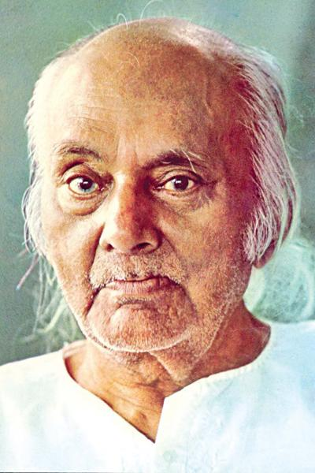

Kazi Nazrul Islam
The national poet of bangladesh
Rebel poet
Kazi Nazrul Islam is the national poet of bangladesh who is especially recognised as a Bidrohi Kobi(rebel poet) around the country. Nazrul us a famous poet, musician
and philosopher of Bangladesh. The famous poet Nazrul's writing deal with the revolution of that period of the British
government. His revolutionar attempt heloed him to be a national poet if Bangladesh. he has raised his voice against any kinds of fascism and oppression
and got popularity swiftly around the Indian Subcontinent.
Awesome Writer
Nazrul's writing explored themes such as love,freedom,humanity and revolutinn. He oppressed all forms of bigotry and
fundamentalism including religious, caste-based and gender-based. Throughout his career, Nazrul wrote short stories,novels and
essays but is best known for his songs and poems. He pioneered new music forms such as Bengalu ghazals. Nazrul wrote and composed
music for nearly 4,000 songs(many recorded on HMV and gramopj=hine records), collectively known as Nazrul Geeti.

Love has no meaning or amount
-Kazi Nazrul Islam
Awards
Jagattarini Gold medal
2945
From the University of Calcutta for his work in Bengali Literatur.
Padma Bhusan
1960
One of the highest civilian honours of the Republic of India
National Poet
Conferred the title by the Government of Bangladesh
Ekushey Padak
1976
Bangladesh's highest civilian honours.
Poetry
- Agni Bina(The Fiery Lute),1922
- Sanchita(Collected Poems),1925
- Phanimanasa(The Cactus),1927
- Chakrabak(The Flamingo),1929
- Satbhai Champa (The Seven Brother of Champa),juveline poems,1933
- Nirjhar (Fountain),1939
- Natun Chand(The New Moon),1939
- Morubhaskar(The Sun in the Desert),1951
- Sanchayan(Collected Poems),1995
- Nazrul Islam (Collection of Islamic Poems),1982
Poems and Songs
- Dolan Chapa(name of a faintly fragrant monsoon flower),1923
- Bisher Bashi(The Poison Flute),1924
- Bhangar Gan(The Song of Destruction),1924
- Chhayarhat(The raga of Chhayannat),1925
- Chittana(On Chittaranjan),1925
- Samyabadi(The Proclaimer of Equality),1926
- Puber Hawa(The Eastern Wind),1926
- Sarbhana(The Proletariat)1926
- Sindhu Hindoi(The Undulation of the Sea),1927
- JinJir(Chain),1928
- Pralaya Shikha (Doormantry Flame),1930
- Shesh Saogat(The Last Offering),1958